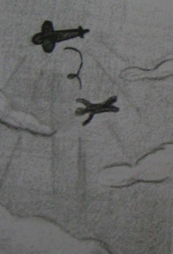

Stresli zamanlarda insanların dertlerinden kurtulup dünyayı geride bırakmak istemeleri normaldir. Bir düşünün. Sizi sevmeyen birisini sevdiğinizde ya da işyerinde her şey ters giderken kimi zaman en kolay yol bu duygu yok olana kadar mümkün olduğunca uzağa gitmektir. Uzaklaşmak size zihninizi boşaltmak ve yapmak istediklerinizi yapabilmek şansı sağlar. Ama her ne kadar her şeyi bırakıp başımızı alıp gitmek istesek de hayal kurmak yapmaktan daha kolaydır. Belki de bu yüzden cenneti hayal ederiz. Hepimiz uçmak ve özgür olmak isteriz.
1. Paraşütle atlamaya karar verdiniz ve ilk atlayışınızı yapmaya hazırlanıyorsunuz.
Yerde sıranızı beklerken yukardan atlayanları seyrediyorsunuz. Aklınızdan neler geçiyor?
2. Sıranız geldi ve uçak üç bin metreye yükselirken siz de kendinizi hazırlıyorsunuz.
Arkanıza hiç bakmadan önünüzde açılan kapıya geliyor ve kendinizi aşağıya bırakıyorsunuz. Aşağıya atlarken ne diye bağırıyorsunuz?
3. Güvenli bir biçimde yere indiniz. Paraşütünüzü toplarken bir eğitmen size doğru geliyor ve bir şeyler söylüyor. Eğitmen ne söylüyor?
